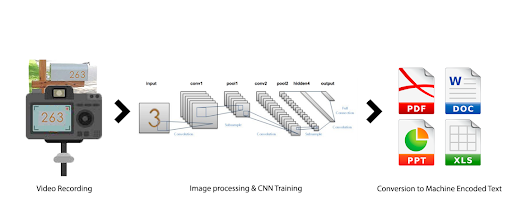
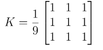
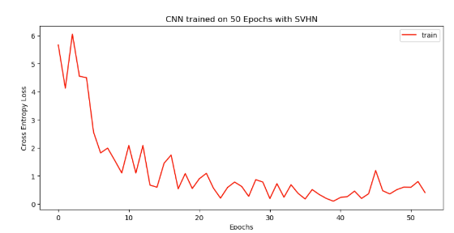
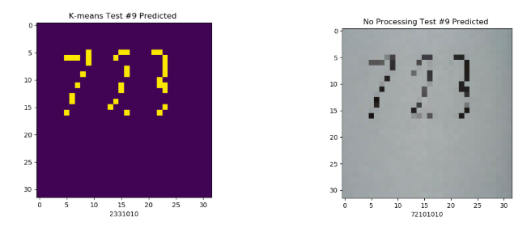
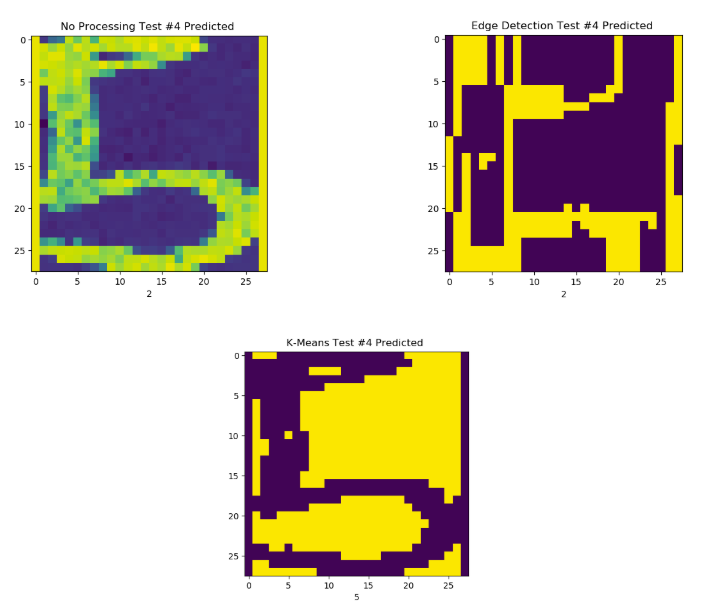

Nothin' But Nets
Bryan Baek (sbaek47), Christopher Banks (cbanks34), Clay Dodson (cdodson31), Dasom Eom (deom3)Fall 2019 CS 6476: Class Project
Georgia Tech
Final Update
Abstract
In this project, we are looking at applying multi-digit detection from real-world image frames via a live video feed. In real world scenarios, image detection from videos is difficult because many elements (e.g. occlusion, lighting, rotation) add more complexity to object recognition. We trained two convolutional neural networks (CNNs) from scratch on labeled datasets of digit images, and the model makes inference on all of the digits in an image received from a live webcam video feed. The model trained on MNIST dataset achieves 98% accuracy on test set and the model trained on the SVHN dataset achieves 90\9% accuracy on the test set. In this paper, we investigate using deep learning for hand-written digit recognition. In addition, we use DNNs to detect images with multiple digits and compare these models with a classical approach for digit detection and classification . We show that deep networks are not only able to classify digits, but they are also able to localize them.Our project’s goal is to create a modular framework for multi-digit detection using deep neural networks. We train a model on digit datasets acquired from the internet and attempt inference of live video feed for handwritten digits which we post process to include bounding boxes over detected digits and return the predicted digits in machine encoded text (e.g. txt, csv, xls, etc.).

Introduction
In the physical world, humans draw and write their abstract idea or knowledge to better explain to audiences. As computer technology has developed, streaming media emerges as new visual means to convey information to distant audiences. Although humans can easily understand the contents displayed in streaming video, it is difficult for machines to recognize the contents of the images embedded in the video. Due to this, the information in the video cannot be processed or fully characterized by the computer system [1]. We propose to train a Convolutional Neural Network (CNN) on datasets on handwritten digits and house numbers to classify single/multiple handwritten digits from live video feed. The digits in the feed will have bounding boxes with a predicted label from the model.With the large number of the hand-written documents, there is a great demand to convert the handwritten documents into digital record copies, which are more accessible through digital systems, such as digital forms and databases. To automatically accomplish the transformation from handwritten numbers to their digital version, multi-digit recognition is inevitable and useful.
Text recognition from images is an important task that has multiple real-world applications such as text localization [1], transcription of text into digital format [2], car plate reading [3], automatic check reading [4], classifying text from unlabeled/partially labeled documents [1], recognizing road signs and house number [5], etc. Traditionally hand designed features are used for image classification [6][7]. However, these techniques require a huge amount of engineering effort, and often do not generalize to novel situations. Recent techniques in deep learning have allowed efficient automatic learning of features that are superior to hand designed features. As a result, we are able to train classifier that is significantly more accurate compared to previous methods. In this paper, we investigate using deep learning to classify handwritten digits, and show that with a simple deep network, we can classify digits with near-perfect accuracy. We test our methods on the MNIST dataset [8]. This dataset consists of 50,000 training digit images and 10,000 testing images and is an important benchmark for deep learning methods. Samples images from the dataset are shown in Figure 1. On this dataset, we achieve an accuracy of 99.3% on the test set. We also investigate classifying multiple digits, where more than one digit is present in an image. An example of this task is shown in Figure 2. We design a novel method of applying classifier of a single digit to an image with multiple digits. Though the number of digits and their location is unknown a-priori, our method is able to accurately localize and classify all the digits in the image.
In many real-world problems, such as car plate detection [3] or house number recognition [5] there are multiple digits in the same image, and their location is unknown to us. Therefore, not only do we want to classify existing digits, we would also like to locate where the digits are, and how many there are. We show that based on the deep classifier we trained before we can design an algorithm to accomplish this. What we need is that given an image patch we must identify both whether there is a digit in the image patch, and what digit it is, if there is one. If we can accomplish this, then we may simply apply this method to each patch of our input image, and we will be able to localize and classify all the digits in the image.
Approach
We approached this problem using CNNs [9][10] due to their robust capabilities at learning complex features from image data, which would help us extend classical approaches for digit detection to overcome image deformations, occlusions or minor distortions that might inhibit classical computer vision programs from detecting images. A CNN is similar to an ordinary neural network that consists of neurons that have learnable weights and biases. CNNs, however, makes the explicit assumption that the inputs are images by having the layers arranged in three dimensions: width, height, and depth. This makes the forward function more efficient to implement and reduces the amount of parameters in the network, as the neurons will only be connected to a small region of the previous layer. Regular neural networks do not scale well to full images. For example, an image with 200x200 pixels with 3 RGB values will lead to neurons that have 200*200*3 = 120,000 weights. With several neurons, the parameters would add up quickly. Our entire system can be described in three phases: training CNN models, digit localization using classical approaches and digit identification using the trained models.We used Pytorch to generate two CNN models due to the ease of implementation and wealth of resources available for interacting with Pytorch trained models [11][12][13]. In addition, each CNN is trained on one of two datasets we used. The MNIST dataset (http://yann.lecun.com/exdb/mnist/) is a database which contains 60000 training datasets and 10000 test datasets on handwritten digits, and the SVHN datasets (http://ufldl.stanford.edu/housenumbers/) contain 73257 training datasets and 26032 test datasets of the street view house numbers. The MNIST dataset is the canonical data set for handwritten digit identification. Most data scientists have experimented with this data set. It contains around 60,000 handwritten digits for training and 10,000 for testing. However, the digits in real life scenarios are generally very different and can vary in shade, texture and/or size. A bit for research leads us to one more public dataset SVHN — Street View House Numbers dataset [5]. The dataset consists of house-number images gathered from Google’s street view and annotated. These numbers are taken from “real world” instances of digits located on houses which, depending on how the images were taken, capture a wide variety of lighting and shape variations that a digit can have.
We trained a CNN using the MNIST Dataset and the SVHN dataset to perform the end-to-end task of simultaneously recognizing and localizing all the digits of a number. We trained CNNs using Pytorch and evaluated each model based on their loss, accuracy, and learning time. The architecture of the model to train on the MNIST dataset was [CONV1 - RELU - POOL - CONV2 - RELU - POOL - FC1 - RELU - FC2 - LOG_SOFTMAX]. The first conv layer has 1 input image channel, 20 output image channels, and 5x5 square convolution kernel followed by a RELU layer (elementwise activation function) Pooling layer to perform a downsampling operation along the spatial dimensions. The second conv layer has 20 input channels, 50 output channels, and 5x5 square convolution kernel followed by same RELU and pooling layer. Then, two fully connected layers and a log of a softmax layer are used to compute the class scores. Log softmax layer improves numerical performance and gradient optimization [4], and this can be useful if the model can be computationally expensive.

The model trained on the SVHN dataset has 10 sequential hidden layers with layers 1-8 having the following structure: CONV-BATCHNORM-RELU-MAXPOOL-DROPOUT, the last three layers are fully connected. All convolution layers have a kernel size of 5x5 and the first convolution layer has 3 input channels and 48 output channels. The last convolution layer has 192 input channels and 192 output channels and each convolution layer is followed by a batch norm layer to do a normalization operation on the output features from the previous layer followed by a RELU operation. The model contains 3 fully connected layers where the final output layer is trained to classify digits from the train set of the SVHN dataset. The backpropagation utilizes the Cross Entropy Loss Function and we optimize using stochastic gradient descent.

Another approach we tried to detect multi digit image frame was applying the sliding window algorithm. The methodology of the sliding window algorithm used in this project was to manually divide the image frame into smaller regions and run the digit detecting model for each layer. The benefit of the sliding window algorithm is that its implementation easier and simpler than CNN training, and it could be done only with opencv and image processing technologies.
The problem of the sliding window algorithm is that it cannot properly detect the digit if the digit is located at the corner of the sliding window layer, or if one layer has more than one number in it.
To solve this problem, we have applied the following techniques in the sliding window algorithm:
- Dividing the image into sliding window with several different sizes.
- Making some sliding windows to check the cases in which the number is located at the corner of sliding windows
After training our models, we preprocess images for easy user recognition and to ease classifier digit classification by developing a bounding box algorithm. We do this by converting the image to a binary image via thresholding and applying the following blurring kernel filter:

After applying the blurring filter we find 5 contours of the image by sorting the contours [2] with the largest rectangular area. This algorithm returns the positions in the original image of the bounding boxes corresponding to a single digit. We will use this to extend the MNIST model by segmenting multi-digit images and classifying the individual numbers.
After this step, we continue the preprocessing of the image by applying two methods of segmentation to increase the contrast of the images for prediction: k-means segmentation and edge detection. Using K-means, the image is segmented into two clusters and the output is resized for input into our CNN model. We use the Canny edge detection algorithm to perform a morphological operation on the image and increase the fidelity of the line segments in an image; following this, the image is dilated and eroded, also known as opening the image, to remove noise and connect line segments within an image. The efficacy of these approaches is verified in the experiment and results section.
After the image preprocessing is done, we can perform inference with the trained models. The two models we developed are: the MNIST model, trained to do inference on single digits in an image and an SVHN model, trained to do inference on up to five digits at a time in an image. In the following section we will show the loss function vs. epochs for each of these trained models as well as their performance at predicting numbers given from a set of webcam images after the three preprocessing methods are applied (k-means, edge detection, no processing).
Experiments and Results
For the baseline approach, by randomly guessing the digits [0-9], we would achieve the theoretical accuracy of 0.1. Then, we first used a sklearn library to train a simple random forest classifier model on the MNIST dataset. Random Forest classifier is a simple, ensemble learning method that uses many decision trees and selects the class that is the most often predicted by the trees. From testing on 10000 images, it achieved an accuracy score of 0.955.In training the MNIST model via PyTorch, we used the batch size of 64, 10 epochs, and 0.01 learning rate and 0.5 momentum. For training and testing, the data was normalized to get the data within in a (0,1) range and reduce the skewness, which can help CNN learn faster and better. The torchvision.transforms package provides tools for preprocessing data and for performing data augmentation. The images were normalized by subtracting the mean RGB value and dividing by the standard deviation of each RGB value; we've hardcoded the mean and std. We did not change the default values for the hyperparameters (e.g. learning rate) for the MNIST model because the model achieved 99% accuracy on the test set, and we didn’t see the need to change the hyperparameters.
To evaluate the models and the approach, we are using negative log likelihood loss: L(y) = -log(y). It is useful to train a classification problem with C classes. It is used commonly with a softmax function. When computing the loss, higher confidence at the correct class leads to lower loss and vice-versa. Over 10 epochs, we recorded and plotted the loss over time for the MNIST training and the testing set. For the most part, the loss is converging at around 0.01 for training and 0.03 for testing. For the accuracy, the training accuracy converges to around 99% after 5 epochs, and the testing accuracy converges to 99% after around 5 epochs.
With this dataset, we didn’t have a big overfitting problem, but in case we had one, increasing the regularization strength avoids the problem of overfitting because it reduces the complexity of the model, thus by using regularization it is possible to train complex models. 
The approach with the sliding window did not work well with our digit detecting model for the following reasons. Our model always returns one number based on probability in the given image layer, and it returns a number even when there is no number provided in the given image frame. When we run the model in our modified sliding window algorithm, some random numbers which yielded higher probability in the background image with no numbers on it win over the true positive digits on the image which were detected 2-3 times in certain sliding window layer. The more we divide the sliding windows into different sizes, we yield the higher counts of random numbers.
Another issue with the sliding window approach is that it runs the model more than 40 times for the given one image frame to test different sized sliding windows. Consequently, the system gets slower and shows buggy behaviors. Therefore, we decided that the sliding window approach is not proper for the digit detection performance on the live time video.
Primary Test
We provide 50 test cases (50 short videos with different single handwritten digit) and test the models. If our models create a text file which contains the equivalent digit from the test video, we will consider it as a success case.
SVHN Model: Using the model trained to detect up to 5 digits in a single image, we test our preprocessing algorithms on hand written images.
- No Preprocessing: Out of the 50 images used, with no preprocessing our model predicts the correct image with 68.8% accuracy
- K-means preprocessing: Using K-means preprocessing we get 68.8% accuracy as well.
- Milk
- Edge Detection Preprocessing: Out of 50 images, using canny edge detection we were not able to correctly predict an image.
- K-means preprocessing: Using K-means preprocessing to divide the image into 2 clusters allowed the MNIST model to predict digits correctly 22.2% of the time.
- No preprocessing: With no preprocessing, images were predicted correctly 24.4% of the time.
Secondary Test
We provide 25 test cases (25 short videos with different multiple handwritten digits) and test the model. If our model creates a text file which contains the equivalent digits from the test video, we will consider it as a success case.SVHN Model:
- K-means preprocessing: Out of 25 images, using k-means preprocessing gave the model a prediction accuracy of 28.4%.
- No preprocessing: With no preprocessing other than resizing the image and converting it to grayscale, the model achieved an accuracy of 40.9 %.
- No preprocessing: With no preprocessing, images were predicted correctly 24.4% of the time.
- Edge Detection Preprocessing: Out of 25 images, using canny edge detection we were able to correctly predict an image with 38.7% accuracy.
- K-means preprocessing: Using K-means preprocessing to divide the image into 2 clusters allowed the MNIST model to predict digits 40.8% accuractly.
- No preprocessing: With no preprocessing, images were identified with 37.3% accuracy.
Qualitative Results
SVHN - Single Digit Identification
SVHN - Multi Digit Identification

MNIST - Single Digit Identification

Conclusion and Future Works
In conclusion, we have developed an end-to-end platform for recognition and classification of images utilizing two seperate CNN trained on MNIST data and SVHN data. From our inference tests we see that the MNIST trained model responded better to preprocessing with the K-means input for predicting numbers. The multi-digit trained classifier performed best without a preprocessing element. Future work can testing varying window sizes for image prediction, longer training times for the MNIST model and developing a real time probabilistic classifier that increasingly weighs a preferred prediction of a digit based on the shape and structure of a digit as it is being written.References
[1] Real-Time Scene Text Localization and Recognition http://fadaei.semnan.ac.ir/uploads/MV7.pdf[2] TexT - Text Extractor Tool for Handwritten Document Transcription and Annotation https://arxiv.org/pdf/1801.05367.pdf
[3] Automatic License Plate Detection & Recognition using deep learning https://towardsdatascience.com/automatic-license-plate-detection-recognition-using-deep-learning-624def07eaaf
[4] Handwritten Bank Check Recognition of Courtesy Amounts https://pdfs.semanticscholar.org/60a3/8d528d6f785c31beec2ba91f2edb7e8c2f06.pdf
[5] SVHN dataset http://ufldl.stanford.edu/housenumbers/
[6] A survey of recent and classical recognition methods https://pdfs.semanticscholar.org/d09a/931337ff1577f1e5aef0228df56673426266.pdf
[7] https://ieeexplore.ieee.org/abstract/document/4309314
[8] MNIST dataset http://yann.lecun.com/exdb/mnist/
[9] Video classification of digits w/ CNNs https://github.com/ronrest/real_time_multi_digit_recognition/blob/master/report.pdf
[10] A webpage explaining Convolutional Networks http://cs231n.github.io/convolutional-networks/
[11] Website of video classification of multi digit w/ CNNs http://ronny.rest/portfolio/multi_digit
[12] Large-scale Video Classification with Convolutional Neural Networks https://www.cv-foundation.org/openaccess/content_cvpr_2014/papers/Karpathy_Large-scale_Video_Classification_2014_CVPR_paper.pd
[13] Handwritten digit recognition using opencv and sklearn http://hanzratech.in/2015/02/24/handwritten-digit-recognition-using-opencv-sklearn-and-python.html
Link to Proposal
Link to Midterm Report